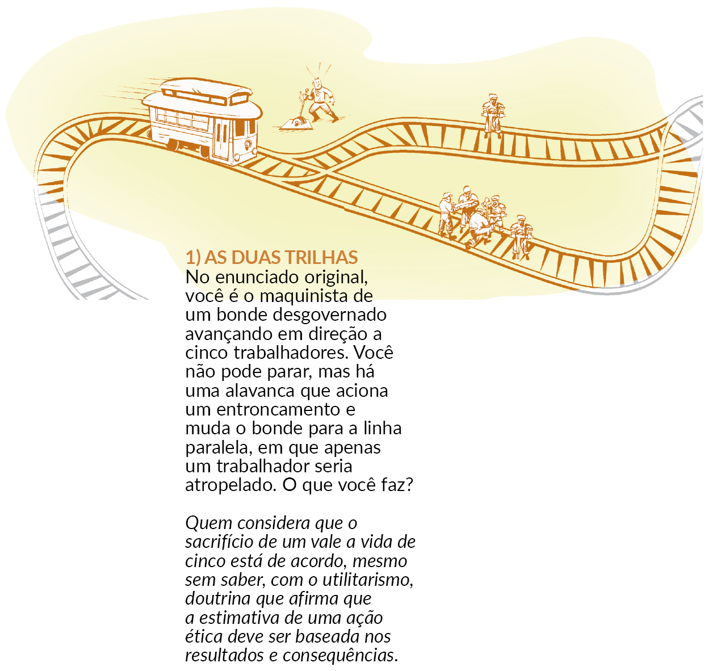
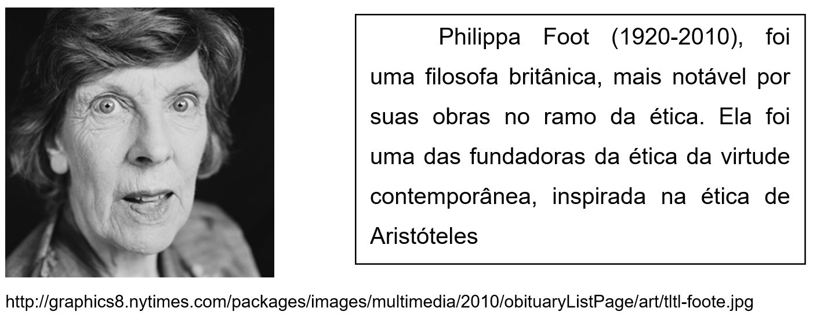
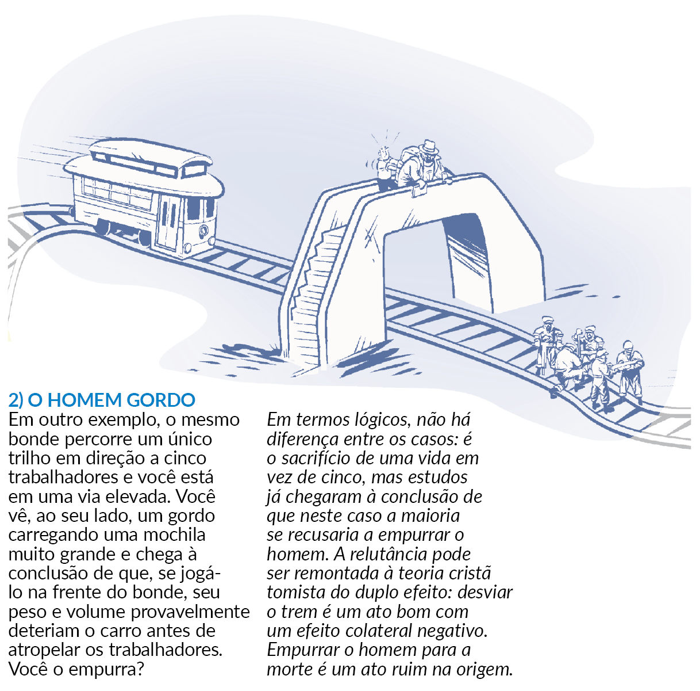
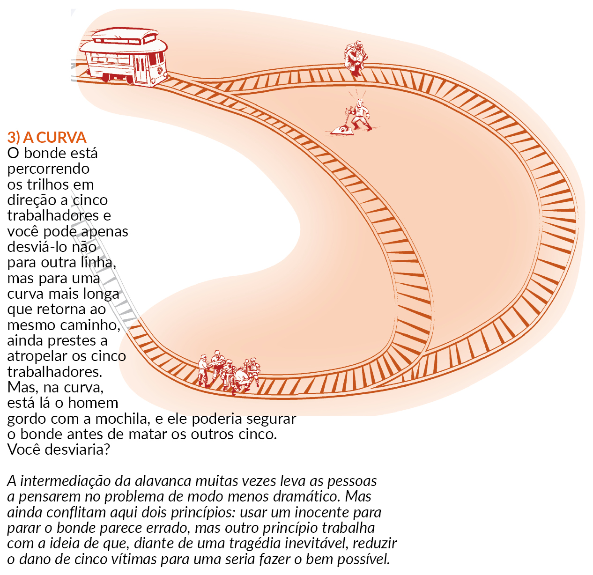

CAPÍTULO 2: ÉTICA CONSEQUENCIALISTA E UMA TOMADA DE DECISÃO DIFÍCIL NA INDUSTRIA DO MOBILIÁRIO
Questão/pergunta
Fato: LOGX é uma indústria no ramo de mobiliário e as vendas de uma de suas unidades com 1.100 funcionários têm caído dia após dia. Os executivos da empresa decidem fechar aquela unidade e demitir todos os seus funcionários e envia a diretora de RH para efetivar a demissão em massa e lhe confere a terrível missão de fechar a filial.
Problema: Ao chegar na cidade e conhecer as instalações daquela indústria percebe que os funcionários não terão chances de recontratação em outras empresas, pois estão desatualizados e seus conhecimentos são específicos demais para se readaptarem. Outro detalhe importante é que aquela unidade é a maior fonte empregadora da cidade e seus funcionários dependem daquele emprego para sustentar suas famílias. Mas, por outro lado, ela sabe que a fábrica não pode continuar operando no prejuízo, pois isso coloca em risco muitos mais empregos que os 1.100 daquela unidade.
A diretora de RH está num dilema. No entanto, ela quer tomar a decisão correta e agir eticamente e ficar em paz com sua consciência moral. O que ela deveria fazer?
Contextualizando
Parar o trem ou passar sobre o corpo?
Por Letícia Duarte, Zero Hora, 08/08/2015
Um dilema moral clássico na filosofia começa com a hipotética história do maquinista de um bonde desgovernado que precisa decidir se segue seu curso sobre os trilhos, o que mataria cinco trabalhadores, ou se faz um desvio para a direita, matando um. Tirar a vida de um seria uma escolha legítima para poupar a vida de cinco?
Na semana passada, um outro dilema improvável se atravessou diante dos brasileiros, a partir de uma violação deliberada na estação Madureira, no Rio de Janeiro: ao ver um ambulante atropelado sobre os trilhos, a concessionária SuperVia autorizou seu maquinista a passar com um segundo trem por cima do corpo, para não provocar atrasos no horário de pico. Ignorar uma morte seria justificável para evitar o atraso de 6 mil passageiros que lotavam três trens na linha?
(Re)construindo conhecimentos
A ÉTICA se apresenta como um guia de como deveríamos viver e agir. Há três teorias principais em ética normativa (a parte da ética que trata do modo como as pessoas deveriam se comportar): a ética baseada no dever, a ética baseada na conseqüência e a ética baseada na virtude.
Neste capítulo vamos estudar alguns aspectos da ética baseada nas consequências.
Éticas baseadas nas consequências
O caso do ambulante atropelado no trem do Rio de Janeiro, lembra um dos mais célebres experimentos lógicos no campo da ética: o dilema do bonde, no qual uma situação hipotética é oferecida para solicitar uma escolha moral. A criação é atribuída à filósofa Philippa Foot (1920 – 2010) em 1967, com diversas variantes propostas por outros filósofos que analisaram o tema desde então:

Uma vez que tenhamos um método para pensar em ética, podemos usá-lo para chegar a princípios sobre o modo como devemos decidir o certo e o errado. Um desses métodos consiste em olhar para as consequências. Se elas forem boas, é certo fazer isso; se forem ruins, não é certo. Há vários tipos de éticas baseadas nas consequências. Elas são chamadas de teorias consequencialistas, ou consequencialismo. Elas mudam de acordo com o que consideram “bom” ou “ruim”.
O consequencialismo diz que devemos fazer tudo o que aumente as boas consequências (os benefícios). Não importa em si que tipo de coisa fazemos. Essa perspectiva defende que temos apenas um dever básico: fazer aquilo que tiver as melhores consequências.
Para ilustrar o consequencialismo, atente para o exemplo que segue: suponhamos que sua amiga esteja sendo traída pelo seu namorado, mas ela não sabe disso. Ela lhe pergunta sobre o comportamento do namorado na balada. O que você deve fazer? Deve contar a verdade a ela – ou deve mentir?
Se você for um consequencialista, achará que deve mentir ou dizer a verdade, dependendo do que tiver consequências melhores. Nesse caso, você analisará se sua amiga ficaria mais feliz sabendo ou não sabendo da traição. Como um consequencialista, você não acharia que mentir é, em si, errado. Ao invés disso, você pensaria que mentir é correto se tiver consequências melhores.
Retome agora os dilemas do bonde. Se você pensava em desviar o trem para salvar 5 pessoas, mesmo que uma tivesse que morrer, provavelmente você seguiu o princípio consequencialista. Desviar o trem diminui as más consequências, portanto o resultado é melhor.
Vamos analisar outro caso: CASO DO POLICIAL E DO BANDIDO
Imagine a seguinte situação. Você é médico. Está de plantão em um hospital de urgência. Você é o médico-chefe daquele plantão. Tudo corre bem, sem grandes preocupações. Os casos tratados, até o momento são: embriaguez, grávidas com contrações, crise de hipertensão, crise renal, um menino que engoliu uma bola de gude, etc. De repente, você é chamado na SALA 1 (que trata dos casos de urgência). Quando você chega ao local, vê duas macas com dois indivíduos extremamente agitados. É relatado que houve um tiroteio em um ônibus. Os dois indivíduos estão baleados. O sujeito da esquerda é o assaltante e o sujeito da direita é um policial que estava no ônibus e reagiu ao assalto. Você faz os exames preliminares e solicita exames à equipe do laboratório e do raio X. Avalia o quadro de ambos, que continuam cada vez mais agitados e perdendo muito sangue. Você pede para a enfermeira responsável que avise o bloco cirúrgico para prepararem duas salas, porque os pacientes precisam ser operados rapidamente. Como os raios X ainda não chegaram, você sai da sala e vai buscá-los. Quando esta retornando, na porta da sala, você encontra um policial que é chefe do policial baleado e junto a ele está a mulher do policial. O chefe diz para você: “Doutor, salve a vida dele, pois é um policial e tem dois filhos para criar.” Surpreendido, você entra na sala e, de imediato, recebe o comunicado de que SOMENTE UMA sala de cirurgia está disponível. Você pergunta a situação dos pacientes às respectivas equipes que estão envolvidas nos atendimentos. As respostas são as seguintes:
– O paciente da direita, isto é, o policial, está em estado gravíssimo e estável.
– O paciente da esquerda, isto é, o assaltante, está em estado gravíssimo e instável.
A enfermeira responsável pergunta: “Qual dos dois vamos mandar para a sala de cirurgia?”
O que você faria nesta situação?
Você decidiria de maneira consequencialista? Justifique sua decisão.
Utilitarismo
Os filósofos ingleses Jeremy Bentham (1748- 1832) e John Stuart Mill (1806 -1873) são considerados os pais do utilitarismo clássico. Eles defenderam o “princípio da maior felicidade”, segundo o qual uma ação é correta se, e somente se, conduzir o maior número de pessoas à felicidade maior. O utilitarismo é, portanto, um tipo de consequencialismo: as ações não são julgadas em si mesmas, mas em virtude de suas consequências.
Para um utilitarista, a felicidade é critério para avaliar as consequências de uma ação. Porém, repare que o utilitarismo pensa em como essa ação vai afetar todas ou maior número de pessoas envolvidas por ela. Ou seja, o utilitarista não é egoísta. O egoísta leva em consideração apenas a si mesmo na hora de avaliar as consequências de uma ação.
Quem foi?
As ideias de Jeremy Bentham (1748-1832) influenciaram o liberalismo clássico, que caracterizou a economia do século 19.
As contribuições de John Stuart Mill - “As ações são corretas na medida em que tendem a promover a felicidade, erradas na medida em
que tendem a promover o reverso da felicidade.” - distribuem-se pelos campos da Lógica, da Psicologia, do Direito, da Economia e da Política.
Fórmula: O Utilitarismo clássico diz que devemos sempre fazer aquilo que maximize o equilíbrio do benefício sobre o dano para todos os afetados por nossa ação. Mas o que maximizar? Colocar os Johprós e contras numa balança e buscar aumentar o positivo e diminuir o negativo!
O princípio (fórmula) do utilitarismo é aplicado seguindo três passos:
(1) Calcule as opções que estão disponíveis. Por exemplo, talvez eu possa fazer A ou B.
(2) Estime as prováveis consequências benéficas e maléficas de cada opção para as partes afetadas. Talvez A me fizesse um pouco mais feliz (benefício), mas faria outros dois muito infelizes (dano).
(3) Decida qual opção melhora o equilíbrio do benefício sobre os danos. Essa opção é seu dever.
Exemplo: “Você é o dono de uma empresa que produz parafusos e conta com 400 funcionários. Além de você, a empresa tem mais dois sócios. Devido à crise financeira mundial, as vendas caíram muito e a empresa está quase no prejuízo. Isso não agrada a nenhum dos sócios. Um de seus funcionários apresentou um estudo, mostrando que, se investir numa máquina importada, poderá demitir 200 funcionários e produzir com um custo mais baixo, viabilizando o negócio. Um dos seus sócios propõe fechar a fábrica e mudar de ramo. Os sócios se reuniram para decidir o que fazer.”
Como decidiriam os empresários se seguissem o utilitarismo?
a) Determine as opções disponíveis. Ex.1. Comprar a máquina, mas demitir e ganhar menos. 2. Mudar de ramo e fechar a fábrica
b) Determine as consequências positivas e negativas para todos os envolvidos pela ação. Ex. sócios e funcionários.
c) Calcule qual a opção beneficia a maioria. No caso, qual seria?
Ação e reflexão
A seguir apresentamos duas continuações criadas pelos filósofos para o caso do bonde. Lembre que são experimentos lógicos. Os filósofos criam essas situações para que possamos pensar sobre como tomamos nossas decisões e o que está envolvido nelas.

Redija um texto comparando as situações 1), 2) e 3) do caso do bonde.
Como você agiria em cada uma delas?
O que muda em cada situação?
O que aprendi
Um dos métodos que usamos na ética consiste em olhar para as consequências de uma ação que vamos fazer. Se elas forem boas, é certo fazer isso; se forem ruins, não é certo. Há vários tipos de éticas baseadas nas consequências. Elas são chamadas de teorias consequencialistas, ou consequencialismo. Elas mudam de acordo com o que consideramos “bom” ou “ruim”.
O consequencialismo diz que devemos fazer tudo o que aumente as boas consequências (os benefícios). Não importa em si que tipo de coisa fazemos. Por exemplo, se mentir vai ajudar um grande número de pessoas, é certo mentir.
O Utilitarismo clássico é um tipo de consequencialsmo. Essa perspectiva defende que devemos sempre fazer aquilo que maximize o equilíbrio do benefício sobre o dano para todos os afetados por nossa ação. Mas o que maximizar? Colocar os prós e contras numa balança e buscar aumentar o positivo e diminuir o negativo!
O princípio (fórmula) do utilitarismo é aplicado seguindo três passos:
(1) Calcule as opções que estão disponíveis. Por exemplo, talvez eu possa fazer A ou B.
(2) Estime as prováveis consequências benéficas e maléficas de cada opção para as partes afetadas. Talvez A me fizesse um pouco mais feliz (benefício), mas faria outros dois muito infelizes (dano).
(3) Decida qual opção melhora o equilíbrio do benefício sobre os danos. Essa opção é seu dever.